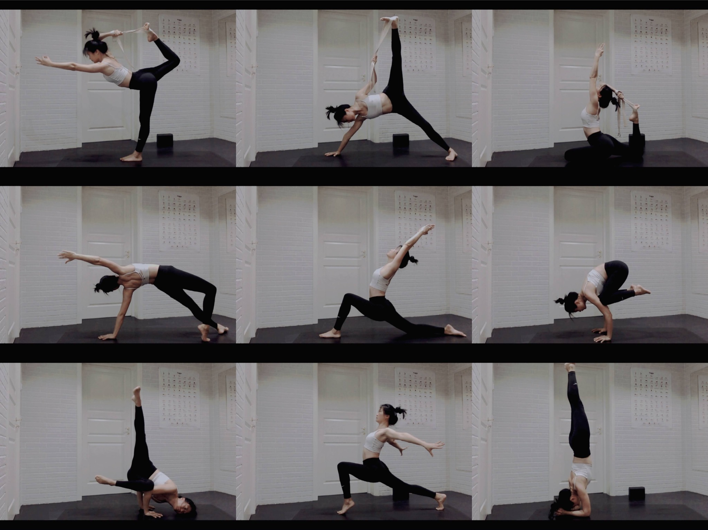
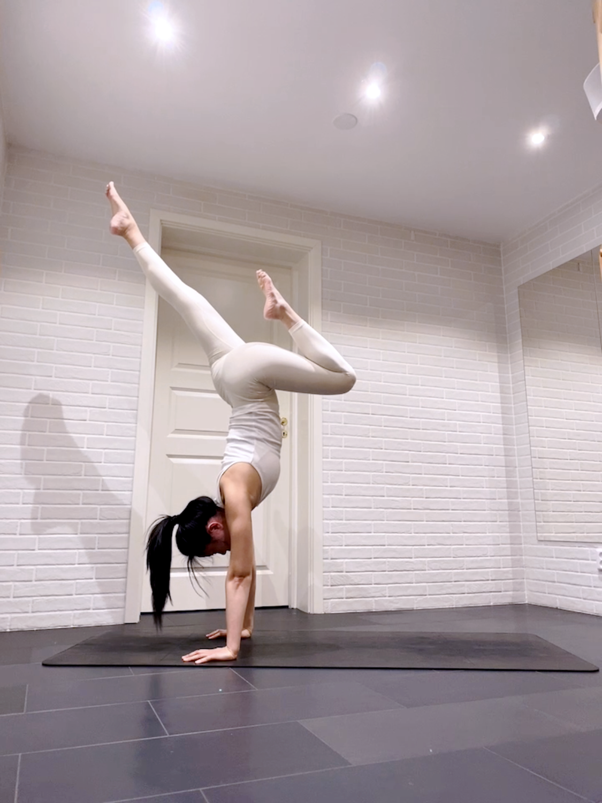

10 Years of Practice
Consistency became a personal brand.
A long-term practice taught me discipline, visual storytelling and how progress can build trust.

10 years of yoga, shaped into a story of teaching, community and brand building.

A long-term practice taught me discipline, visual storytelling and how progress can build trust.